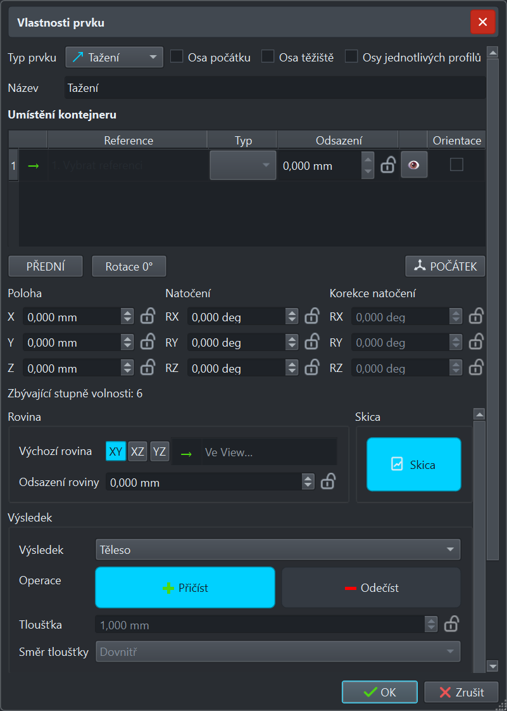
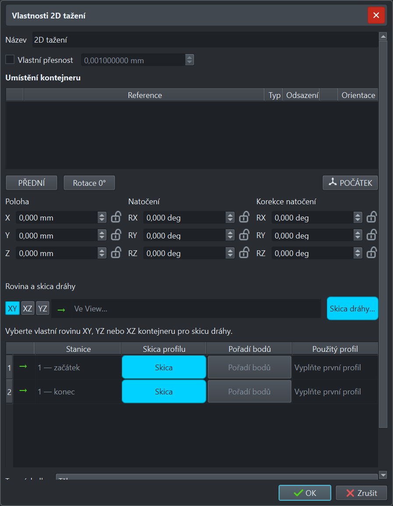

ZIMA-CAD / Руководства
Найдите следующий шаг.
Наглядные руководства по отдельным инструментам. Одни и те же материалы на сайте и в ZIMA-CAD.
Текст руководства на английском языке.
 Начало работыОткрыть руководство
Начало работыОткрыть руководство ЭскизОткрыть руководство
ЭскизОткрыть руководство
Выдавливание и вращениеОткрыть руководство Скругление и фаскаОткрыть руководство
Скругление и фаскаОткрыть руководство
ПротягиваниеОткрыть руководство Листовой металлОткрыть руководство
Листовой металлОткрыть руководство СборкиОткрыть руководство
СборкиОткрыть руководство ЧертежиОткрыть руководство
ЧертежиОткрыть руководство МКЭОткрыть руководство
МКЭОткрыть руководство ВизуализацияОткрыть руководство
ВизуализацияОткрыть руководство CAMОткрыть руководство
CAMОткрыть руководствоРуководства по запросу не найдены.